library(tidyverse)
library(ggplot2)
library(sjPlot)
library(performance)
library(ggeffects)
library(broom.mixed)
library(patchwork)
library(corrplot)
library(ggcorrplot)
library(janitor)
library(psych)
library(naniar)
library(corrr)
library(Hmisc)
library(fedmatch)
library(MASS)
library(sandwich)
library(lmtest)
library(kableExtra)MW spectrum analysis v2
Import required libraries:
1 Overview
This is the second version of the analysis for MW~spectrum associations. The main difference from the first verison is that here STAI-state scores were not included in the analyses based on the meeting and discussion we had with Peti and Bianka (Trait scores would be more appropriate as MW is also measured on trait level, however STAI-trait scores were missing for a lot of participants).
Data preprocessing:
- 709 observations in complete, initial dataset
- 237 participants/obervations were removed as they lack MWQ responses.
- 21 participants/observations removed as majority of questionnaires is missing (impossible to impute missing values).
- 73 participants removed due to medication/diagnoses (reduced dataset).
- 1 additional participant removed due to missing BDI score (removed both datasets).
Final dataset sizes:
- Full = 450 observations
- Reduced = 377 observations
The following was done as part of this analysis:
- Bivariate correlation analysis presented in correlation matrices
- Regression analysis of all total questionnaire scores^ predicting MWQ
- Regression analysis of ASRS subscales predicting MWQ
- Network analysis with total questionnaire scores
- Network analysis with subscales
All analyses were done on full and redueced datasets.
^ included questionnaires: ASRS, OCI-R, AQ, MSS-B, BDI (shortened), EAT, HCL-32
IMPORTANT NOTE: after checking EAT subscale calculations, there are deviations from Bianka’s and my calculation in some cases. We are looking into it and will solve the “problem” ASAP.
2 Data importing and finalisation
Import both datasets and remove STAI-state score as I still included it in the exported, finalised datasets.
Full dataset:
df_full_analysis <- read_csv("/Users/Intragalactic/Documents/PhD ELTE/Year 2/Lab/MW spectrum study/R_project/MW_spectrum_analysis/Data/mw_spectrum_full_df_final.csv")Rows: 450 Columns: 25
── Column specification ────────────────────────────────────────────────────────
Delimiter: ","
dbl (25): mwq_total_score, ASRS_total_score, ASRS_hyper_impulse, ASRS_inatte...
ℹ Use `spec()` to retrieve the full column specification for this data.
ℹ Specify the column types or set `show_col_types = FALSE` to quiet this message.df_full_analysis <- df_full_analysis %>%
dplyr::select(-STAI_state_sum)Reduced dataset (no medicated/diagnosed participants):
df_reduced_analysis <- read_csv("/Users/Intragalactic/Documents/PhD ELTE/Year 2/Lab/MW spectrum study/R_project/MW_spectrum_analysis/Data/mw_spectrum_reduced_df_final.csv")Rows: 377 Columns: 25
── Column specification ────────────────────────────────────────────────────────
Delimiter: ","
dbl (25): mwq_total_score, ASRS_total_score, ASRS_hyper_impulse, ASRS_inatte...
ℹ Use `spec()` to retrieve the full column specification for this data.
ℹ Specify the column types or set `show_col_types = FALSE` to quiet this message.df_reduced_analysis <- df_reduced_analysis %>%
dplyr::select(-STAI_state_sum)Create a name dictionary to use for clean naming in plots and tables:
name_dict <- c(
mwq_total_score = "MWQ (mind-wandering)",
ASRS_total_score = "ASRS (ADHD)",
MSSB_total = "MSS-B (schizotypy)",
AQ_total_score = "AQ (autism spectrum)",
OCI_R_total_score = "OCI-R (OCD)",
BDI_shorten_total_score = "BDI short (depression)",
HCL32_total_score = "HCL-32 (hypomania)",
EAT_total_score = "EAT (eating disorder)",
ASRS_hyper_impulse = "ASRS - hyperactive, impulsive",
ASRS_inattentive = "ASRS - inattentive",
MSSB_positive = "MSS-B - positive",
MSSB_negative = "MSS-B - negative",
MSSB_disorganised = "MSS-B - disorganised",
OCI_R_hoard = "OCI-R - hoarding",
OCI_R_wash = "OCI-R - washing",
OCI_R_obsess = "OCI-R - obsessing",
OCI_R_order = "OCI-R - ordering",
OCI_R_check = "OCI-R - checking",
OCI_R_neutral = "OCI-R - neutralizing",
HCL32_act = "HCL-32 - active/elated",
HCL32_irrit = "HCL-32 - risk-taking/irritable",
EAT_diet = "EAT - dieting",
EAT_bul_foodpreoc = "EAT - bulimia, food preoc.",
EAT_oral_ctrl = "EAT - oral control"
)3 Data analysis
3.1 Visualizing total questionnaire score distribution
Full dataset:
full_df_questionnaire_distribution_plot <- df_full_analysis %>%
dplyr::select(mwq_total_score,
ASRS_total_score,
MSSB_total,
AQ_total_score,
OCI_R_total_score,
BDI_shorten_total_score,
HCL32_total_score,
EAT_total_score) %>%
pivot_longer(cols = everything(),
names_to = "Questionnaire",
values_to = "Score") %>%
mutate(Questionnaire = recode(Questionnaire, !!!name_dict)) %>%
ggplot(aes(x = "", y = Score, fill = Questionnaire)) +
geom_boxplot(outlier.shape = 21, alpha = 0.8) +
facet_wrap(~ Questionnaire, scales = "free_y", ncol = 4) +
theme_minimal() +
theme(
legend.position = "none",
axis.text.x = element_blank(),
strip.text = element_text(face = "bold", size = 10)
) +
labs(
title = "Questionnaire Scores (full dataset)",
x = NULL,
y = "Score"
)Reduced dataset:
reduced_df_questionnaire_distribution_plot <- df_reduced_analysis %>%
dplyr::select(mwq_total_score,
ASRS_total_score,
MSSB_total,
AQ_total_score,
OCI_R_total_score,
BDI_shorten_total_score,
HCL32_total_score,
EAT_total_score) %>%
pivot_longer(cols = everything(),
names_to = "Questionnaire",
values_to = "Score") %>%
mutate(Questionnaire = recode(Questionnaire, !!!name_dict)) %>%
ggplot(aes(x = "", y = Score, fill = Questionnaire)) +
geom_boxplot(outlier.shape = 21, alpha = 0.8) +
facet_wrap(~ Questionnaire, scales = "free_y", ncol = 4) +
theme_minimal() +
theme(
legend.position = "none",
axis.text.x = element_blank(),
strip.text = element_text(face = "bold", size = 10)
) +
labs(
title = "Questionnaire Scores (reduced dataset)",
x = NULL,
y = "Score"
)Show plots:
full_df_questionnaire_distribution_plot
reduced_df_questionnaire_distribution_plot
3.2 Bivariate correlations
3.2.1 Full dataset
Run a Spearman correlation test to use for matrix (Bonferroni correction for multiple tests):
corr_matrix_full_data <- df_full_analysis %>%
dplyr::select(mwq_total_score,
ASRS_total_score,
MSSB_total,
AQ_total_score,
OCI_R_total_score,
BDI_shorten_total_score,
HCL32_total_score,
EAT_total_score) %>%
mutate(across(everything(), ~ as.numeric(scale(.)))) %>%
corr.test(method = "spearman", adjust = "bonferroni")Plotting the matrix:
corr_matrix_full_data_ggplot <- ggcorrplot(corr_matrix_full_data$r,
type = "full",
lab = TRUE,
lab_size = 4,
p.mat = corr_matrix_full_data$p,
sig.level = 0.05,
insig = "blank",
lab_col = "black",
colors = c("#D64541", "white", "#1E8449")) +
theme_minimal() +
labs(x = NULL, y = NULL, title = "Bivariate correlations of questionnaires", subtitle = "Below the diagonal, insignificant associations with unadjusted p-values were removed. \nAbove the diagonal, insignificant associations with adjusted p-values were removed.", caption = "Bonferroni correction used for p-value adjustment.") +
scale_x_discrete(labels = name_dict) +
scale_y_discrete(labels = name_dict) +
theme(
axis.text.x = element_text(angle = 45, hjust = 1),
plot.title.position = "plot", # aligns relative to the entire plot
plot.subtitle.position = "plot", # aligns relative to the entire plot
plot.caption.position = "plot",
plot.title = element_text(hjust = 0),
plot.subtitle = element_text(hjust = 0)
)Create bivariate correlation table:
total_n_full_df <- corr_matrix_full_data$n
total_df_full_df <- total_n_full_df - 2
corr_tidy_full_df <- as.data.frame(corr_matrix_full_data$r) %>%
rownames_to_column("var1") %>%
pivot_longer(-var1, names_to = "var2", values_to = "r") %>%
left_join(
as.data.frame(corr_matrix_full_data$p) %>%
rownames_to_column("var1") %>%
pivot_longer(-var1, names_to = "var2", values_to = "p"),
by = c("var1", "var2")
) %>%
mutate(n = total_n_full_df, # Use the single n value
df = total_df_full_df) %>% # Use the single df value
filter(var1 != var2) # Remove self-correlations3.2.2 Reduced data analysis (no diagnosed/medicated participants)
Run a Spearman correlation test to use for matrix (Bonferroni correction for multiple tests):
corr_matrix_reduced_data <- df_reduced_analysis %>%
dplyr::select(mwq_total_score,
ASRS_total_score,
MSSB_total,
AQ_total_score,
OCI_R_total_score,
BDI_shorten_total_score,
HCL32_total_score,
EAT_total_score) %>%
mutate(across(everything(), ~ as.numeric(scale(.)))) %>%
corr.test(method = "spearman", adjust = "bonferroni")Plotting the matrix:
corr_matrix_reduced_data_ggplot <- ggcorrplot(corr_matrix_reduced_data$r,
type = "full",
lab = TRUE,
lab_size = 4,
p.mat = corr_matrix_reduced_data$p,
sig.level = 0.05,
insig = "blank",
lab_col = "black",
colors = c("#D64541", "white", "#1E8449")) +
theme_minimal() +
labs(x = NULL, y = NULL, title = "Bivariate correlations of questionnaires (reduced dataset)", subtitle = "Below the diagonal, insignificant associations with unadjusted p-values were removed. \nAbove the diagonal, insignificant associations with adjusted p-values were removed.", caption = "Bonferroni correction used for p-value adjustment.") +
scale_x_discrete(labels = name_dict) +
scale_y_discrete(labels = name_dict) +
theme(
axis.text.x = element_text(angle = 45, hjust = 1),
plot.title.position = "plot", # aligns relative to the entire plot
plot.subtitle.position = "plot", # aligns relative to the entire plot
plot.caption.position = "plot",
plot.title = element_text(hjust = 0),
plot.subtitle = element_text(hjust = 0)
)Create bivariate correlation table:
total_n_reduced_df <- corr_matrix_reduced_data$n
total_df_reduced_df <- total_n_reduced_df - 2
corr_tidy_reduced_df <- as.data.frame(corr_matrix_reduced_data$r) %>%
rownames_to_column("var1") %>%
pivot_longer(-var1, names_to = "var2", values_to = "r") %>%
left_join(
as.data.frame(corr_matrix_reduced_data$p) %>%
rownames_to_column("var1") %>%
pivot_longer(-var1, names_to = "var2", values_to = "p"),
by = c("var1", "var2")
) %>%
mutate(n = total_n_reduced_df, # Use the single n value
df = total_df_reduced_df) %>% # Use the single df value
filter(var1 != var2) # Remove self-correlations3.2.3 Showing plots
Show both plots:
corr_matrix_full_data_ggplot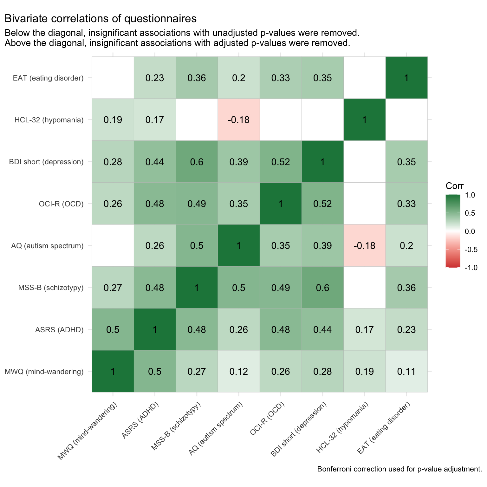
corr_matrix_reduced_data_ggplot
3.3 Regression analyses
As mentioned before, compared to the first version of the analysis, STAI-state is not included in this analyses.
3.3.1 Full dataset
Standardizing all variables for regression analysis:
df_full_analysis_scaled <- df_full_analysis %>%
mutate(across(everything(), ~ as.numeric(scale(.))))3.3.1.1 Fitting regression model
Fitting multiple regression for full dataset:
regression_model_full_data <- lm(mwq_total_score ~ ASRS_total_score + MSSB_total + AQ_total_score + OCI_R_total_score + BDI_shorten_total_score + HCL32_total_score + EAT_total_score,
data = df_full_analysis_scaled)Print summary of the model. Note that p-values here are unadjusted. Since the literature and specialised forum discussions vary on this topic, I am not sure whether correction like FDR should be applied or not.
summary(regression_model_full_data)
Call:
lm(formula = mwq_total_score ~ ASRS_total_score + MSSB_total +
AQ_total_score + OCI_R_total_score + BDI_shorten_total_score +
HCL32_total_score + EAT_total_score, data = df_full_analysis_scaled)
Residuals:
Min 1Q Median 3Q Max
-2.77334 -0.59911 0.03336 0.56416 2.35650
Coefficients:
Estimate Std. Error t value Pr(>|t|)
(Intercept) 1.890e-16 4.039e-02 0.000 1.0000
ASRS_total_score 4.697e-01 4.959e-02 9.472 <2e-16 ***
MSSB_total -1.115e-01 5.599e-02 -1.992 0.0470 *
AQ_total_score 1.347e-02 4.843e-02 0.278 0.7810
OCI_R_total_score 3.932e-02 5.090e-02 0.773 0.4401
BDI_shorten_total_score 1.155e-01 5.503e-02 2.099 0.0363 *
HCL32_total_score 1.006e-01 4.289e-02 2.345 0.0195 *
EAT_total_score -2.044e-02 4.415e-02 -0.463 0.6435
---
Signif. codes: 0 '***' 0.001 '**' 0.01 '*' 0.05 '.' 0.1 ' ' 1
Residual standard error: 0.8568 on 442 degrees of freedom
Multiple R-squared: 0.2774, Adjusted R-squared: 0.2659
F-statistic: 24.23 on 7 and 442 DF, p-value: < 2.2e-163.3.1.2 Model diagnostics (checking the assumptions)
Check for outliers:
check_outliers(regression_model_full_data)OK: No outliers detected.
- Based on the following method and threshold: cook (0.919).
- For variable: (Whole model)check_outliers(regression_model_full_data) |> plot()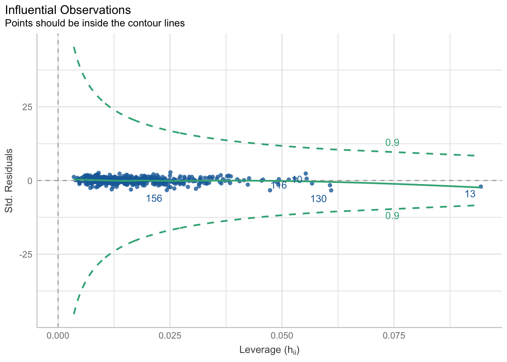
Check for heteroscedasticity:
check_heteroscedasticity(regression_model_full_data)OK: Error variance appears to be homoscedastic (p = 0.800).check_heteroscedasticity(regression_model_full_data) |> plot()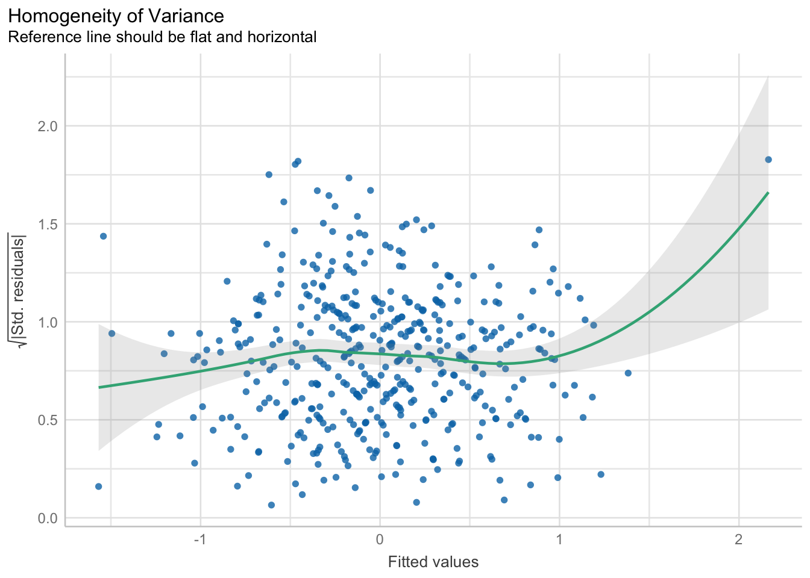
Use alternative inspection to see which point is it:
plot(regression_model_full_data, which = 1)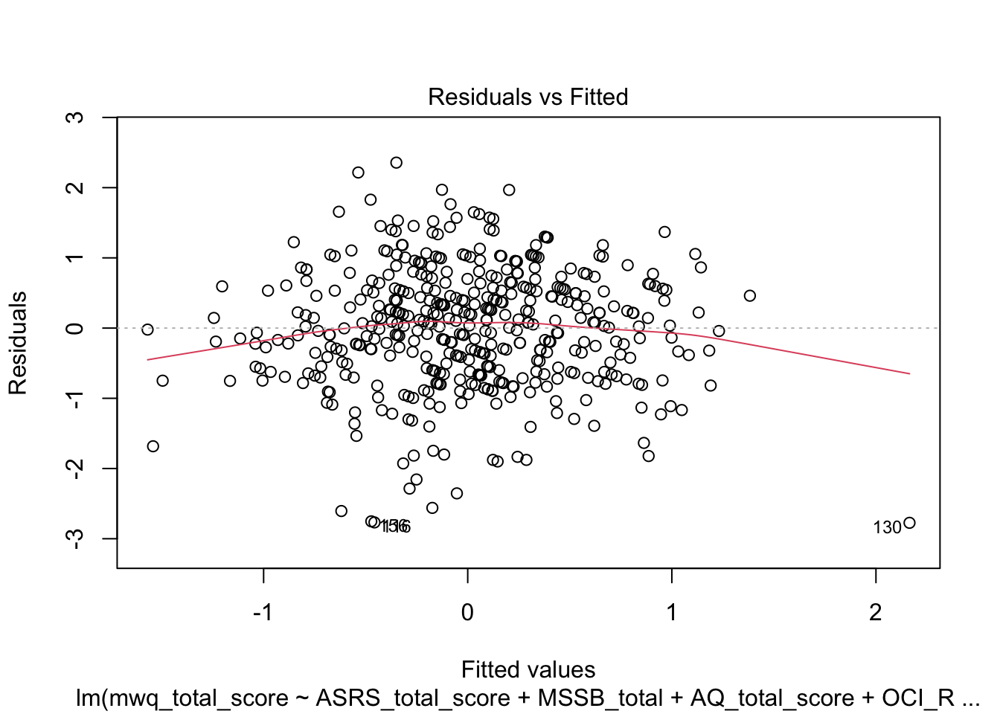
Search for observation 130:
augment(regression_model_full_data) %>%
mutate(row_n = seq((1:nrow(df_full_analysis_scaled)))) %>%
relocate(row_n, 1) %>%
filter(row_n == 130)# A tibble: 1 × 15
row_n mwq_total_score ASRS_total_score MSSB_total AQ_total_score
<int> <dbl> <dbl> <dbl> <dbl>
1 130 -0.609 3.74 -0.105 -0.383
# ℹ 10 more variables: OCI_R_total_score <dbl>, BDI_shorten_total_score <dbl>,
# HCL32_total_score <dbl>, EAT_total_score <dbl>, .fitted <dbl>,
# .resid <dbl>, .hat <dbl>, .sigma <dbl>, .cooksd <dbl>, .std.resid <dbl>While visual inspection suggests that specifically one point affects homoscedasticity, the formal test suggest no issues. After diagnosing the observations, I see that: Observation 130 = 3.73 SD over mean ASRS score. As formal tests suggests no issues and only this point seems to be affecting homoscedasticity, considering our sample size, I believe there is no need for removal of this observation.
Check for normality of residuals:
check_normality(regression_model_full_data)Warning: Non-normality of residuals detected (p = 0.002).plot(regression_model_full_data, which = 2)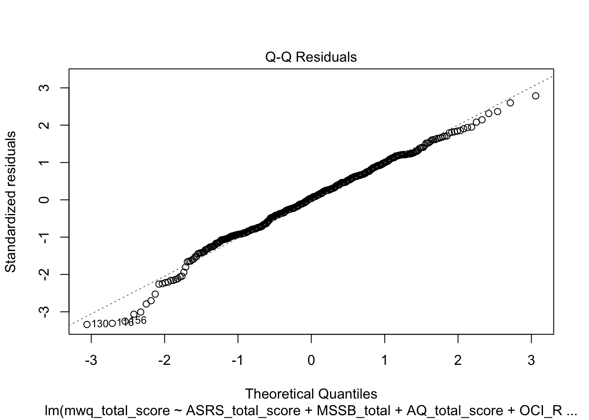
Non-normality of residuals detected - while formal test suggest non-normality of residuals, visual inspections suggests that deviation is only at the tails, so I believe it is reasonable to keep this model.
Check multicolinearity:
check_collinearity(regression_model_full_data)# Check for Multicollinearity
Low Correlation
Term VIF VIF 95% CI Increased SE Tolerance
ASRS_total_score 1.50 [1.35, 1.72] 1.23 0.66
MSSB_total 1.92 [1.69, 2.21] 1.38 0.52
AQ_total_score 1.43 [1.29, 1.64] 1.20 0.70
OCI_R_total_score 1.58 [1.42, 1.82] 1.26 0.63
BDI_shorten_total_score 1.85 [1.64, 2.13] 1.36 0.54
HCL32_total_score 1.12 [1.05, 1.31] 1.06 0.89
EAT_total_score 1.19 [1.10, 1.37] 1.09 0.84
Tolerance 95% CI
[0.58, 0.74]
[0.45, 0.59]
[0.61, 0.77]
[0.55, 0.71]
[0.47, 0.61]
[0.76, 0.95]
[0.73, 0.91]No issues with multicolinearity!
3.3.1.3 Plotting model estimates
Visualising model estimates, no correction applied.
regression_full_data_estimate_plot <- plot_model(regression_model_full_data,
type = "est",
show.value = TRUE,
value.offset = 0.35,
digits = 3,
axis.labels = name_dict) +
theme_minimal() +
labs(title = "Mind wandering (MWQ) predictor estimates")
regression_full_data_estimate_plot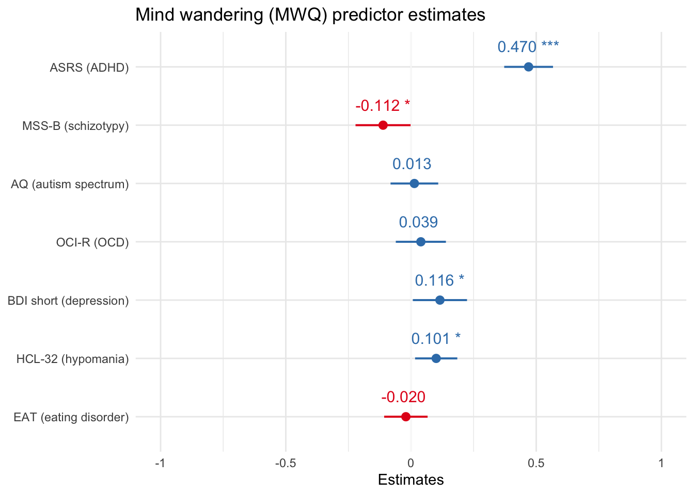
3.3.1.4 Table of results
No p-value adjustment! Table with adjusted p-values in the later section.
tab_model(regression_model_full_data,
show.stat = TRUE,
show.df = TRUE,
string.est = "β",
string.stat = "t",
dv.labels = "MWQ (mind-wandering)",
digits = 3,
pred.labels = name_dict,
CSS = list(css.table = 'font-size: 10pt; width: 100%;'))| MWQ (mind-wandering) | |||||
| Predictors | β | CI | t | p | df |
| (Intercept) | 0.000 | -0.079 – 0.079 | 0.000 | 1.000 | 442.000 |
| ASRS (ADHD) | 0.470 | 0.372 – 0.567 | 9.472 | <0.001 | 442.000 |
| MSS-B (schizotypy) | -0.112 | -0.222 – -0.001 | -1.992 | 0.047 | 442.000 |
| AQ (autism spectrum) | 0.013 | -0.082 – 0.109 | 0.278 | 0.781 | 442.000 |
| OCI-R (OCD) | 0.039 | -0.061 – 0.139 | 0.773 | 0.440 | 442.000 |
| BDI short (depression) | 0.116 | 0.007 – 0.224 | 2.099 | 0.036 | 442.000 |
| HCL-32 (hypomania) | 0.101 | 0.016 – 0.185 | 2.345 | 0.019 | 442.000 |
| EAT (eating disorder) | -0.020 | -0.107 – 0.066 | -0.463 | 0.644 | 442.000 |
| Observations | 450 | ||||
| R2 / R2 adjusted | 0.277 / 0.266 | ||||
3.3.2 Reduced data
Standardizing all variables for regression analysis:
df_reduced_analysis_scaled <- df_reduced_analysis %>%
mutate(across(everything(), ~ as.numeric(scale(.))))3.3.2.1 Fitting regression model
Fitting multiple regression for full dataset:
regression_model_reduced_data <- lm(mwq_total_score ~ ASRS_total_score + MSSB_total + AQ_total_score + OCI_R_total_score + BDI_shorten_total_score + HCL32_total_score + EAT_total_score, data = df_reduced_analysis_scaled)Print summary of the model. Note that p-values here are unadjusted. Since the literature and specialised forum discussions vary on this topic, I am not sure whether correction like FDR should be applied or not.
summary(regression_model_reduced_data)
Call:
lm(formula = mwq_total_score ~ ASRS_total_score + MSSB_total +
AQ_total_score + OCI_R_total_score + BDI_shorten_total_score +
HCL32_total_score + EAT_total_score, data = df_reduced_analysis_scaled)
Residuals:
Min 1Q Median 3Q Max
-2.79685 -0.57526 0.02261 0.57366 2.35769
Coefficients:
Estimate Std. Error t value Pr(>|t|)
(Intercept) -1.683e-16 4.346e-02 0.000 1.000
ASRS_total_score 5.092e-01 5.512e-02 9.239 <2e-16 ***
MSSB_total -5.439e-03 6.227e-02 -0.087 0.930
AQ_total_score 1.699e-03 5.240e-02 0.032 0.974
OCI_R_total_score 3.025e-02 5.586e-02 0.542 0.588
BDI_shorten_total_score 5.143e-02 6.017e-02 0.855 0.393
HCL32_total_score 5.671e-02 4.584e-02 1.237 0.217
EAT_total_score -4.799e-02 4.829e-02 -0.994 0.321
---
Signif. codes: 0 '***' 0.001 '**' 0.01 '*' 0.05 '.' 0.1 ' ' 1
Residual standard error: 0.8439 on 369 degrees of freedom
Multiple R-squared: 0.3011, Adjusted R-squared: 0.2878
F-statistic: 22.71 on 7 and 369 DF, p-value: < 2.2e-16NOTE: compared to full dataset, regression coefficients of model on reduced dataset suggest that only ASRS is a significant predictor for participants with no diagnoses/medication. The most significant difference appears in MSS-B estimates: -0.112 in full dataset and -0.005 in reduced dataset.
3.3.2.2 Model diagnostics (checking the assumptions)
Check for outliers:
check_outliers(regression_model_reduced_data)OK: No outliers detected.
- Based on the following method and threshold: cook (0.92).
- For variable: (Whole model)check_outliers(regression_model_reduced_data) |> plot()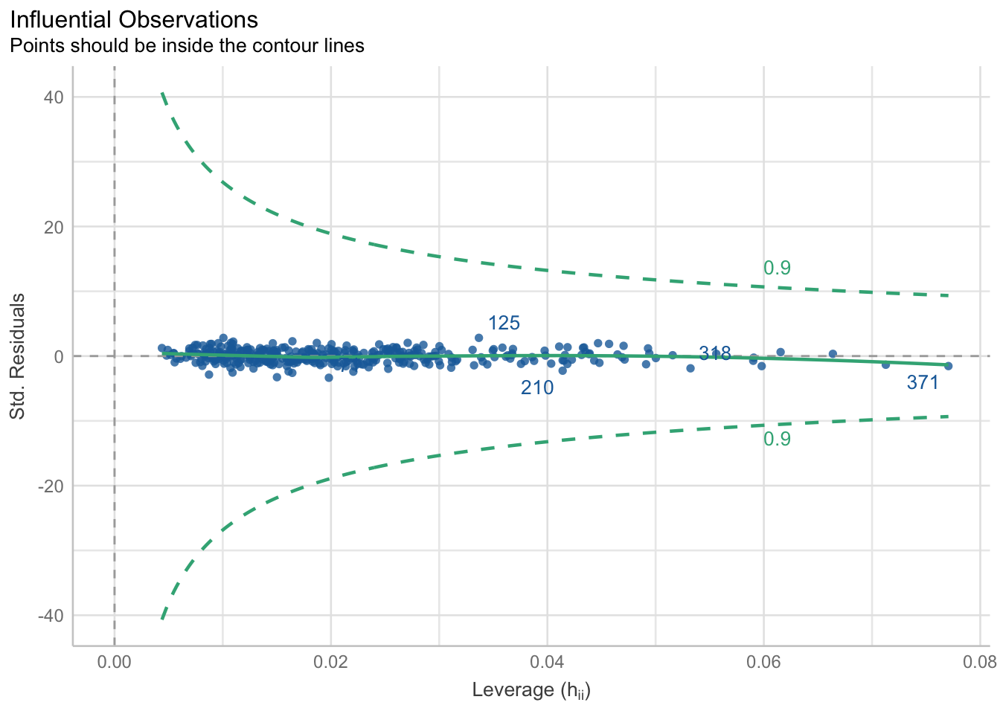
Check for heteroscedasticity:
check_heteroscedasticity(regression_model_reduced_data)OK: Error variance appears to be homoscedastic (p = 0.532).check_heteroscedasticity(regression_model_reduced_data) |> plot()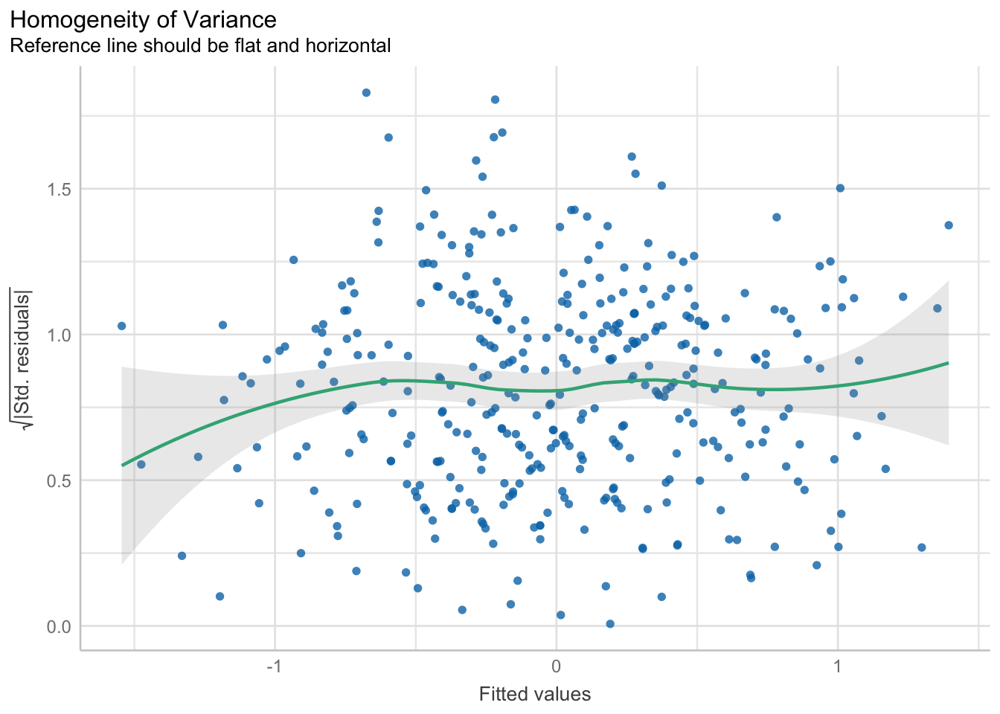
Check for normality of residuals:
check_normality(regression_model_reduced_data)OK: residuals appear as normally distributed (p = 0.424).plot(regression_model_reduced_data, which = 2)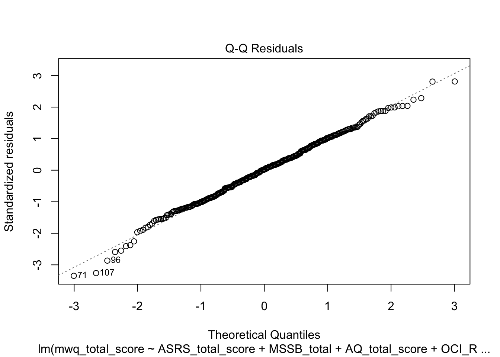
Residuals appear normally distributed.
Check multicolinearity:
check_collinearity(regression_model_reduced_data)# Check for Multicollinearity
Low Correlation
Term VIF VIF 95% CI Increased SE Tolerance
ASRS_total_score 1.60 [1.42, 1.86] 1.27 0.62
MSSB_total 2.05 [1.78, 2.40] 1.43 0.49
AQ_total_score 1.45 [1.30, 1.68] 1.20 0.69
OCI_R_total_score 1.65 [1.46, 1.92] 1.28 0.61
BDI_shorten_total_score 1.91 [1.67, 2.24] 1.38 0.52
HCL32_total_score 1.11 [1.04, 1.33] 1.05 0.90
EAT_total_score 1.23 [1.12, 1.43] 1.11 0.81
Tolerance 95% CI
[0.54, 0.70]
[0.42, 0.56]
[0.60, 0.77]
[0.52, 0.69]
[0.45, 0.60]
[0.75, 0.96]
[0.70, 0.89]No issues with multicolinearity!
3.3.2.3 Plotting model estimates
Visualising model estimates, no correction applied.
regression_reduced_data_estimate_plot <- plot_model(regression_model_reduced_data,
type = "est",
show.value = TRUE,
value.offset = 0.35,
digits = 3,
axis.labels = name_dict) +
theme_minimal() +
labs(title = "Mind wandering (MWQ) predictor estimates (reduced dataset)")
regression_reduced_data_estimate_plot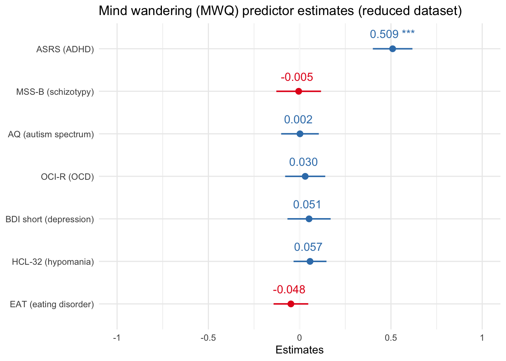
3.3.2.4 Table of results
No p-value adjusment! Adjusted values for both models below.
tab_model(regression_model_reduced_data,
show.stat = TRUE,
show.df = TRUE,
string.est = "β",
string.stat = "t",
dv.labels = "MWQ (mind-wandering)",
digits = 3,
pred.labels = name_dict,
CSS = list(css.table = 'font-size: 10pt; width: 100%;'))| MWQ (mind-wandering) | |||||
| Predictors | β | CI | t | p | df |
| (Intercept) | -0.000 | -0.085 – 0.085 | -0.000 | 1.000 | 369.000 |
| ASRS (ADHD) | 0.509 | 0.401 – 0.618 | 9.239 | <0.001 | 369.000 |
| MSS-B (schizotypy) | -0.005 | -0.128 – 0.117 | -0.087 | 0.930 | 369.000 |
| AQ (autism spectrum) | 0.002 | -0.101 – 0.105 | 0.032 | 0.974 | 369.000 |
| OCI-R (OCD) | 0.030 | -0.080 – 0.140 | 0.542 | 0.588 | 369.000 |
| BDI short (depression) | 0.051 | -0.067 – 0.170 | 0.855 | 0.393 | 369.000 |
| HCL-32 (hypomania) | 0.057 | -0.033 – 0.147 | 1.237 | 0.217 | 369.000 |
| EAT (eating disorder) | -0.048 | -0.143 – 0.047 | -0.994 | 0.321 | 369.000 |
| Observations | 377 | ||||
| R2 / R2 adjusted | 0.301 / 0.288 | ||||
3.3.3 Table with estimates for both full and reduced dataset
No correction:
tab_model(regression_model_full_data,
regression_model_reduced_data,
show.stat = TRUE,
show.df = TRUE,
string.est = "β",
string.stat = "t",
dv.labels = c("MWQ (mind-wandering) in full dataset",
"MWQ (mind-wandering) in reduced dataset"),
digits = 3,
show.fstat = TRUE,
pred.labels = name_dict,
CSS = list(css.table = 'font-size: 10pt; width: 100%;'))| MWQ (mind-wandering) in full dataset | MWQ (mind-wandering) in reduced dataset | |||||||||
| Predictors | β | CI | t | p | df | β | CI | t | p | df |
| (Intercept) | 0.000 | -0.079 – 0.079 | 0.000 | 1.000 | 442.000 | -0.000 | -0.085 – 0.085 | -0.000 | 1.000 | 369.000 |
| ASRS (ADHD) | 0.470 | 0.372 – 0.567 | 9.472 | <0.001 | 442.000 | 0.509 | 0.401 – 0.618 | 9.239 | <0.001 | 369.000 |
| MSS-B (schizotypy) | -0.112 | -0.222 – -0.001 | -1.992 | 0.047 | 442.000 | -0.005 | -0.128 – 0.117 | -0.087 | 0.930 | 369.000 |
| AQ (autism spectrum) | 0.013 | -0.082 – 0.109 | 0.278 | 0.781 | 442.000 | 0.002 | -0.101 – 0.105 | 0.032 | 0.974 | 369.000 |
| OCI-R (OCD) | 0.039 | -0.061 – 0.139 | 0.773 | 0.440 | 442.000 | 0.030 | -0.080 – 0.140 | 0.542 | 0.588 | 369.000 |
| BDI short (depression) | 0.116 | 0.007 – 0.224 | 2.099 | 0.036 | 442.000 | 0.051 | -0.067 – 0.170 | 0.855 | 0.393 | 369.000 |
| HCL-32 (hypomania) | 0.101 | 0.016 – 0.185 | 2.345 | 0.019 | 442.000 | 0.057 | -0.033 – 0.147 | 1.237 | 0.217 | 369.000 |
| EAT (eating disorder) | -0.020 | -0.107 – 0.066 | -0.463 | 0.644 | 442.000 | -0.048 | -0.143 – 0.047 | -0.994 | 0.321 | 369.000 |
| Observations | 450 | 377 | ||||||||
| R2 / R2 adjusted | 0.277 / 0.266 | 0.301 / 0.288 | ||||||||
FDR correction:
tab_model(regression_model_full_data,
regression_model_reduced_data,
show.stat = TRUE,
show.df = TRUE,
string.est = "β",
string.stat = "t",
dv.labels = c("MWQ (mind-wandering) in full dataset",
"MWQ (mind-wandering) in reduced dataset"),
digits = 3,
show.fstat = TRUE,
p.adjust = "fdr",
pred.labels = name_dict,
CSS = list(css.table = 'font-size: 10pt; width: 100%;'))| MWQ (mind-wandering) in full dataset | MWQ (mind-wandering) in reduced dataset | |||||||||
| Predictors | β | CI | t | p | df | β | CI | t | p | df |
| (Intercept) | 0.000 | -0.079 – 0.079 | 0.000 | 1.000 | 442.000 | -0.000 | -0.085 – 0.085 | -0.000 | 1.000 | 369.000 |
| ASRS (ADHD) | 0.470 | 0.372 – 0.567 | 9.472 | <0.001 | 442.000 | 0.509 | 0.401 – 0.618 | 9.239 | <0.001 | 369.000 |
| MSS-B (schizotypy) | -0.112 | -0.222 – -0.001 | -1.992 | 0.094 | 442.000 | -0.005 | -0.128 – 0.117 | -0.087 | 1.000 | 369.000 |
| AQ (autism spectrum) | 0.013 | -0.082 – 0.109 | 0.278 | 0.893 | 442.000 | 0.002 | -0.101 – 0.105 | 0.032 | 1.000 | 369.000 |
| OCI-R (OCD) | 0.039 | -0.061 – 0.139 | 0.773 | 0.704 | 442.000 | 0.030 | -0.080 – 0.140 | 0.542 | 0.942 | 369.000 |
| BDI short (depression) | 0.116 | 0.007 – 0.224 | 2.099 | 0.094 | 442.000 | 0.051 | -0.067 – 0.170 | 0.855 | 0.786 | 369.000 |
| HCL-32 (hypomania) | 0.101 | 0.016 – 0.185 | 2.345 | 0.078 | 442.000 | 0.057 | -0.033 – 0.147 | 1.237 | 0.786 | 369.000 |
| EAT (eating disorder) | -0.020 | -0.107 – 0.066 | -0.463 | 0.858 | 442.000 | -0.048 | -0.143 – 0.047 | -0.994 | 0.786 | 369.000 |
| Observations | 450 | 377 | ||||||||
| R2 / R2 adjusted | 0.277 / 0.266 | 0.301 / 0.288 | ||||||||
3.4 ASRS subscale regression analysis
ASRS subscale regression analysis is warranted for the following reasons:
- The only significant predictor after potential FDR correction in both datasets
- The only <.001 predictor with no correction in full dataset
- The only significant predictor in reduced dataset
3.4.1 Full dataset
Fitting regression model:
asrs_subscale_regression_model_full_data <- lm(mwq_total_score ~ ASRS_hyper_impulse + ASRS_inattentive, data = df_full_analysis_scaled)Summary of the model:
summary(asrs_subscale_regression_model_full_data)
Call:
lm(formula = mwq_total_score ~ ASRS_hyper_impulse + ASRS_inattentive,
data = df_full_analysis_scaled)
Residuals:
Min 1Q Median 3Q Max
-3.03889 -0.55318 0.02451 0.56073 2.28636
Coefficients:
Estimate Std. Error t value Pr(>|t|)
(Intercept) 1.860e-16 4.028e-02 0.000 1.0000
ASRS_hyper_impulse 1.466e-01 4.822e-02 3.040 0.0025 **
ASRS_inattentive 4.276e-01 4.822e-02 8.867 <2e-16 ***
---
Signif. codes: 0 '***' 0.001 '**' 0.01 '*' 0.05 '.' 0.1 ' ' 1
Residual standard error: 0.8545 on 447 degrees of freedom
Multiple R-squared: 0.273, Adjusted R-squared: 0.2698
F-statistic: 83.94 on 2 and 447 DF, p-value: < 2.2e-16check_model(asrs_subscale_regression_model_full_data)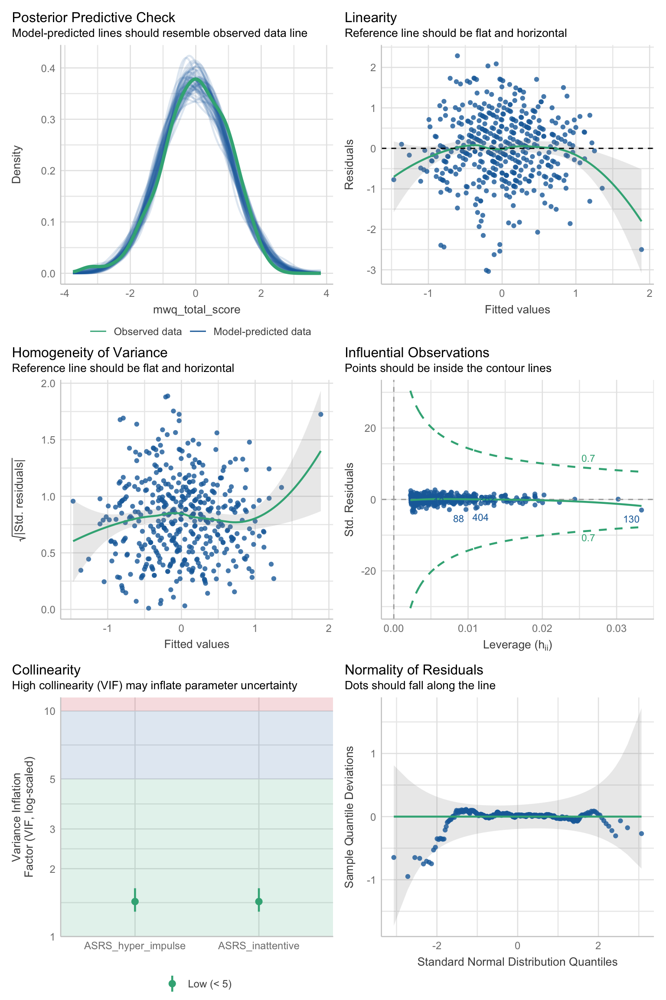
3.4.2 Reduced dataset
Fitting regression model:
asrs_subscale_regression_model_reduced_data <- lm(mwq_total_score ~ ASRS_hyper_impulse + ASRS_inattentive, data = df_reduced_analysis_scaled)Summary of the model:
summary(asrs_subscale_regression_model_reduced_data)
Call:
lm(formula = mwq_total_score ~ ASRS_hyper_impulse + ASRS_inattentive,
data = df_reduced_analysis_scaled)
Residuals:
Min 1Q Median 3Q Max
-2.85970 -0.56480 -0.01282 0.57095 2.39679
Coefficients:
Estimate Std. Error t value Pr(>|t|)
(Intercept) 8.737e-17 4.279e-02 0.000 1.00000
ASRS_hyper_impulse 1.594e-01 5.119e-02 3.114 0.00199 **
ASRS_inattentive 4.564e-01 5.119e-02 8.916 < 2e-16 ***
---
Signif. codes: 0 '***' 0.001 '**' 0.01 '*' 0.05 '.' 0.1 ' ' 1
Residual standard error: 0.8308 on 374 degrees of freedom
Multiple R-squared: 0.3134, Adjusted R-squared: 0.3097
F-statistic: 85.35 on 2 and 374 DF, p-value: < 2.2e-16check_model(asrs_subscale_regression_model_reduced_data)
3.4.3 Summary of ASRS regression
In both datasets ASRS regression suggests that both subscales are significant predictors, specifically “Inattentiveness” subscale.
tab_model(asrs_subscale_regression_model_full_data,
asrs_subscale_regression_model_reduced_data,
show.stat = TRUE,
show.df = TRUE,
string.est = "β",
string.stat = "t",
dv.labels = c("MWQ by ASRS subscales in full dataset",
"MWQ by ASRS subscales in reduced dataset"),
digits = 3,
show.fstat = TRUE,
pred.labels = name_dict,
CSS = list(css.table = 'font-size: 10pt; width: 100%;'))| MWQ by ASRS subscales in full dataset | MWQ by ASRS subscales in reduced dataset | |||||||||
| Predictors | β | CI | t | p | df | β | CI | t | p | df |
| (Intercept) | 0.000 | -0.079 – 0.079 | 0.000 | 1.000 | 447.000 | 0.000 | -0.084 – 0.084 | 0.000 | 1.000 | 374.000 |
| ASRS - hyperactive, impulsive |
0.147 | 0.052 – 0.241 | 3.040 | 0.003 | 447.000 | 0.159 | 0.059 – 0.260 | 3.114 | 0.002 | 374.000 |
| ASRS - inattentive | 0.428 | 0.333 – 0.522 | 8.867 | <0.001 | 447.000 | 0.456 | 0.356 – 0.557 | 8.916 | <0.001 | 374.000 |
| Observations | 450 | 377 | ||||||||
| R2 / R2 adjusted | 0.273 / 0.270 | 0.313 / 0.310 | ||||||||
3.5 Comparing performances of full models and models with ASRS subscales only
3.5.1 Full dataset
ANOVA:
anova(regression_model_full_data, asrs_subscale_regression_model_full_data)Analysis of Variance Table
Model 1: mwq_total_score ~ ASRS_total_score + MSSB_total + AQ_total_score +
OCI_R_total_score + BDI_shorten_total_score + HCL32_total_score +
EAT_total_score
Model 2: mwq_total_score ~ ASRS_hyper_impulse + ASRS_inattentive
Res.Df RSS Df Sum of Sq F Pr(>F)
1 442 324.47
2 447 326.41 -5 -1.9426 0.5292 0.7542Other metrics:
compare_performance(regression_model_full_data, asrs_subscale_regression_model_full_data)# Comparison of Model Performance Indices
Name | Model | AIC (weights)
-----------------------------------------------------------------
regression_model_full_data | lm | 1147.9 (0.025)
asrs_subscale_regression_model_full_data | lm | 1140.6 (0.975)
Name | AICc (weights) | BIC (weights)
--------------------------------------------------------------------------
regression_model_full_data | 1148.3 (0.022) | 1184.8 (<.001)
asrs_subscale_regression_model_full_data | 1140.6 (0.978) | 1157.0 (>.999)
Name | R2 | R2 (adj.) | RMSE | Sigma
----------------------------------------------------------------------------
regression_model_full_data | 0.277 | 0.266 | 0.849 | 0.857
asrs_subscale_regression_model_full_data | 0.273 | 0.270 | 0.852 | 0.8553.5.2 Reduced dataset
ANOVA:
anova(regression_model_reduced_data, asrs_subscale_regression_model_reduced_data)Analysis of Variance Table
Model 1: mwq_total_score ~ ASRS_total_score + MSSB_total + AQ_total_score +
OCI_R_total_score + BDI_shorten_total_score + HCL32_total_score +
EAT_total_score
Model 2: mwq_total_score ~ ASRS_hyper_impulse + ASRS_inattentive
Res.Df RSS Df Sum of Sq F Pr(>F)
1 369 262.80
2 374 258.17 -5 4.6313 Other metrics:
compare_performance(regression_model_reduced_data, asrs_subscale_regression_model_reduced_data)# Comparison of Model Performance Indices
Name | Model | AIC (weights)
-------------------------------------------------------------------
regression_model_reduced_data | lm | 951.8 (<.001)
asrs_subscale_regression_model_reduced_data | lm | 935.1 (>.999)
Name | AICc (weights) | BIC (weights)
----------------------------------------------------------------------------
regression_model_reduced_data | 952.3 (<.001) | 987.2 (<.001)
asrs_subscale_regression_model_reduced_data | 935.2 (>.999) | 950.9 (>.999)
Name | R2 | R2 (adj.) | RMSE | Sigma
-------------------------------------------------------------------------------
regression_model_reduced_data | 0.301 | 0.288 | 0.835 | 0.844
asrs_subscale_regression_model_reduced_data | 0.313 | 0.310 | 0.828 | 0.8313.6 Network analysis
3.6.1 Full data
# Load Libraries
library(qgraph)
library(bootnet)This is bootnet 1.6For questions and issues, please see github.com/SachaEpskamp/bootnet.3.6.1.1 Total scores
df_net_analysis_tot_quest_full <- df_full_analysis_scaled %>%
dplyr::select(mwq_total_score,
ASRS_total_score,
MSSB_total,
AQ_total_score,
OCI_R_total_score,
BDI_shorten_total_score,
HCL32_total_score,
EAT_total_score) %>%
rename(
"MWQ" = mwq_total_score,
"ASRS" = ASRS_total_score,
"MSS-B" = MSSB_total,
"AQ" = AQ_total_score,
"OCI-R" = OCI_R_total_score,
"BDI" = BDI_shorten_total_score,
"HCL-32" = HCL32_total_score,
"EAT" = EAT_total_score
)# 2. Estimate Network
net_analysis_tot_quest_full <- estimateNetwork(df_net_analysis_tot_quest_full, default = "EBICglasso")Estimating Network. Using package::function:
- qgraph::EBICglasso for EBIC model selection
- using glasso::glassoWarning in EBICglassoCore(S = S, n = n, gamma = gamma, penalize.diagonal =
penalize.diagonal, : A dense regularized network was selected (lambda < 0.1 *
lambda.max). Recent work indicates a possible drop in specificity. Interpret
the presence of the smallest edges with care. Setting threshold = TRUE will
enforce higher specificity, at the cost of sensitivity.# Calculate centrality
cent_tot_quest_full <- centrality(net_analysis_tot_quest_full)$OutDegree
# Scale centrality to reasonable node sizes (e.g., 4-10)
node_sizes_tot_quest_full <- scales::rescale(cent_tot_quest_full, to = c(5, 10))
plot(net_analysis_tot_quest_full,
layout = "spring",
vsize = node_sizes_tot_quest_full, # Manual sizing based on centrality
label.cex = 1.2,
posCol = "darkgreen",
negCol = "red3",
title = "Network analysis for total questionnaires (full dataset)")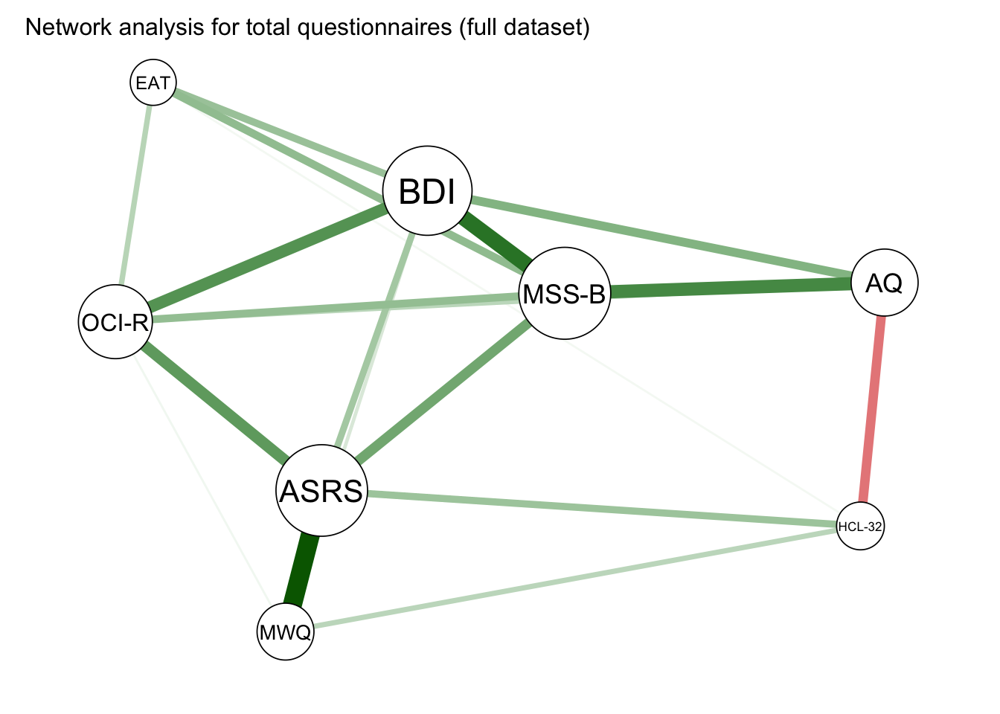
Centrality plot:
centralityPlot(net_analysis_tot_quest_full, orderBy = "Strength")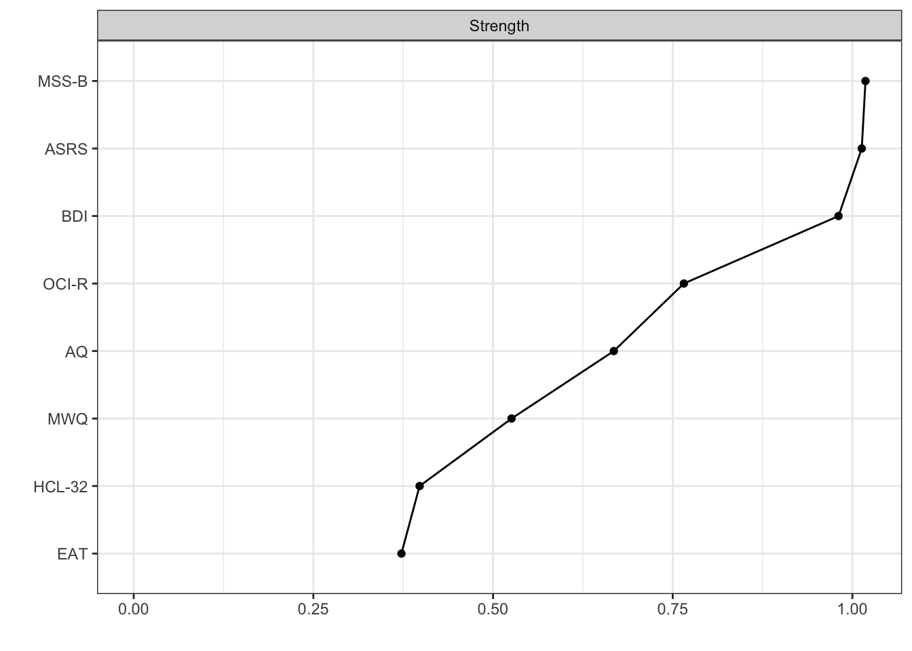
# 5. Bootstrap Accuracy
boot_results_tot_quest_full <- bootnet(net_analysis_tot_quest_full, nBoots = 1000)
plot(boot_results_tot_quest_full, labels = TRUE)3.6.1.2 Subscales
# 1. Load and Prepare Data
df_net_analysis_full_subscales <- df_full_analysis_scaled %>%
dplyr::select(mwq_total_score,
ASRS_hyper_impulse, ASRS_inattentive,
MSSB_positive, MSSB_negative, MSSB_disorganised,
AQ_total_score,
OCI_R_hoard, OCI_R_wash,
OCI_R_obsess, OCI_R_order, OCI_R_check, OCI_R_neutral,
BDI_shorten_total_score,
HCL32_act, HCL32_irrit,
EAT_diet, EAT_bul_foodpreoc, EAT_oral_ctrl) %>%
rename(
"MWQ\n(mind-wandering)" = mwq_total_score,
"ASRS\nHyperactive" = ASRS_hyper_impulse,
"ASRS\nInattentive" = ASRS_inattentive,
"MSS-B\nPositive" = MSSB_positive,
"MSS-B\nNegative" = MSSB_negative,
"MSS-B\nDisorganized" = MSSB_disorganised,
"AQ\n(autism)" = AQ_total_score,
"OCI-R\nHoarding" = OCI_R_hoard,
"OCI-R\nWashing" = OCI_R_wash,
"OCI-R\nObsessions" = OCI_R_obsess,
"OCI-R\nOrdering" = OCI_R_order,
"OCI-R\nChecking" = OCI_R_check,
"OCI-R\nNeutralizing" = OCI_R_neutral,
"BDI\n(depression)" = BDI_shorten_total_score,
"HCL-32\nActive/Elated" = HCL32_act,
"HCL-32\nRisk/Irritable" = HCL32_irrit,
"EAT\nDieting" = EAT_diet,
"EAT\nBulimia" = EAT_bul_foodpreoc,
"EAT\nOral Control" = EAT_oral_ctrl
)# 2. Estimate Network
net_analysis_subscales_full <- estimateNetwork(df_net_analysis_full_subscales, default = "EBICglasso")Estimating Network. Using package::function:
- qgraph::EBICglasso for EBIC model selection
- using glasso::glasso# Calculate centrality
cent_subscales_full <- centrality(net_analysis_subscales_full)$OutDegree
# Scale centrality to reasonable node sizes
node_sizes_subscales_full <- scales::rescale(cent_subscales_full, to = c(6, 10))
label_sizes_subscales_full <- scales::rescale(node_sizes_subscales_full, to = c(0.7, 1.0))
plot(net_analysis_subscales_full,
layout = "spring",
vsize = node_sizes_subscales_full,
label.cex = label_sizes_subscales_full, # Proportional to node size
posCol = "darkgreen",
negCol = "red3",
title = "Network analysis for subscales (full dataset)")
# 4. Calculate Centrality
centralityPlot(net_analysis_subscales_full, orderBy = "Strength")
# 5. Bootstrap Accuracy
boot_results_subscales_full <- bootnet(net_analysis_subscales_full, nBoots = 1000)
boot_plot <- plot(boot_results_subscales_full, labels = TRUE, interactive = TRUE)
plotly::ggplotly(boot_plot, height = 2000)3.6.2 Reduced data
3.6.2.1 Total scores
df_net_analysis_tot_quest_reduced <- df_reduced_analysis_scaled %>%
dplyr::select(mwq_total_score,
ASRS_total_score,
MSSB_total,
AQ_total_score,
OCI_R_total_score,
BDI_shorten_total_score,
HCL32_total_score,
EAT_total_score) %>%
rename(
"MWQ" = mwq_total_score,
"ASRS" = ASRS_total_score,
"MSS-B" = MSSB_total,
"AQ" = AQ_total_score,
"OCI-R" = OCI_R_total_score,
"BDI" = BDI_shorten_total_score,
"HCL-32" = HCL32_total_score,
"EAT" = EAT_total_score
)# 2. Estimate Network
net_analysis_tot_quest_reduced <- estimateNetwork(df_net_analysis_tot_quest_reduced, default = "EBICglasso")Estimating Network. Using package::function:
- qgraph::EBICglasso for EBIC model selection
- using glasso::glassoWarning in EBICglassoCore(S = S, n = n, gamma = gamma, penalize.diagonal =
penalize.diagonal, : A dense regularized network was selected (lambda < 0.1 *
lambda.max). Recent work indicates a possible drop in specificity. Interpret
the presence of the smallest edges with care. Setting threshold = TRUE will
enforce higher specificity, at the cost of sensitivity.# Calculate centrality
cent_tot_quest_reduced <- centrality(net_analysis_tot_quest_full)$OutDegree
# Scale centrality to reasonable node sizes (e.g., 4-10)
node_sizes_tot_quest_reduced <- scales::rescale(cent_tot_quest_reduced, to = c(5, 10))
plot(net_analysis_tot_quest_reduced,
layout = "spring",
vsize = node_sizes_tot_quest_reduced, # Manual sizing based on centrality
label.cex = 1.2,
posCol = "darkgreen",
negCol = "red3",
title = "Network analysis for total questionnaires (reduced dataset)")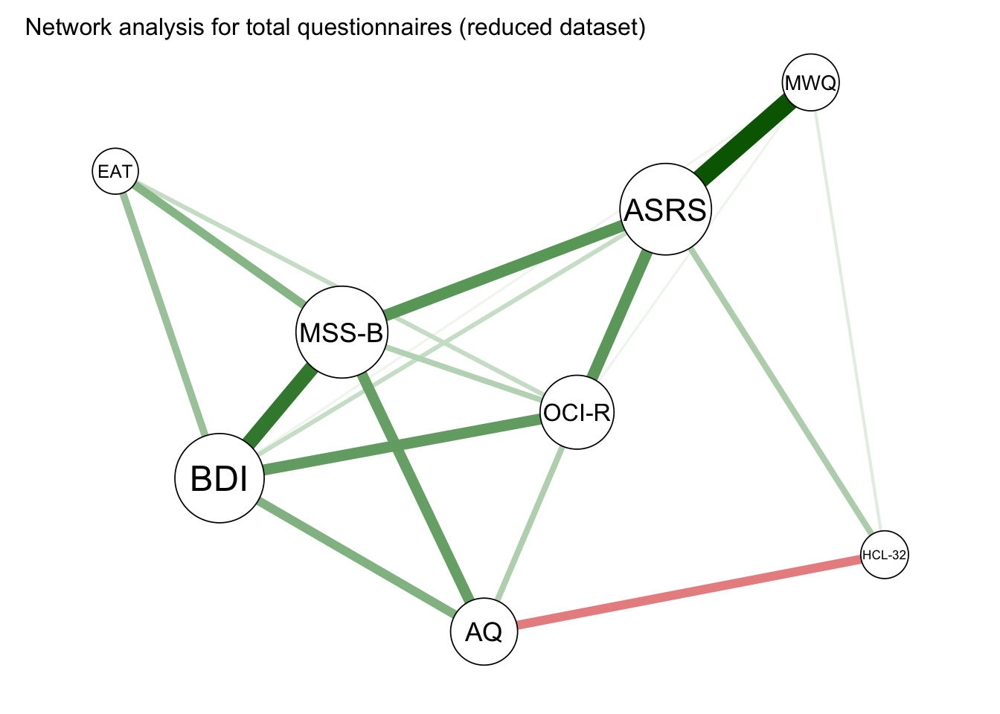
Centrality plot:
centralityPlot(net_analysis_tot_quest_reduced, orderBy = "Strength")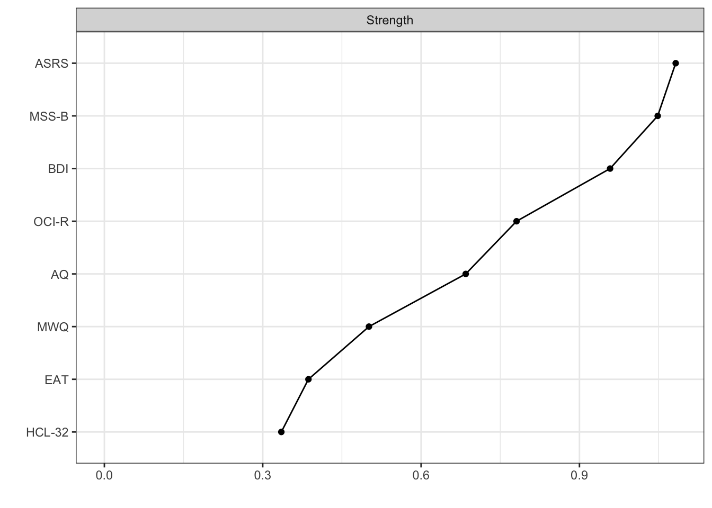
# 5. Bootstrap Accuracy
boot_results_tot_quest_reduced <- bootnet(net_analysis_tot_quest_reducedl, nBoots = 1000)
plot(boot_results_tot_quest_reduced, labels = TRUE)3.6.2.2 Subscales
# 1. Load and Prepare Data
df_net_analysis_reduced_subscales <- df_reduced_analysis_scaled %>%
dplyr::select(mwq_total_score,
ASRS_hyper_impulse, ASRS_inattentive,
MSSB_positive, MSSB_negative, MSSB_disorganised,
AQ_total_score,
OCI_R_hoard, OCI_R_wash,
OCI_R_obsess, OCI_R_order, OCI_R_check, OCI_R_neutral,
BDI_shorten_total_score,
HCL32_act, HCL32_irrit,
EAT_diet, EAT_bul_foodpreoc, EAT_oral_ctrl) %>%
rename(
"MWQ\n(mind-wandering)" = mwq_total_score,
"ASRS\nHyperactive" = ASRS_hyper_impulse,
"ASRS\nInattentive" = ASRS_inattentive,
"MSS-B\nPositive" = MSSB_positive,
"MSS-B\nNegative" = MSSB_negative,
"MSS-B\nDisorganized" = MSSB_disorganised,
"AQ\n(autism)" = AQ_total_score,
"OCI-R\nHoarding" = OCI_R_hoard,
"OCI-R\nWashing" = OCI_R_wash,
"OCI-R\nObsessions" = OCI_R_obsess,
"OCI-R\nOrdering" = OCI_R_order,
"OCI-R\nChecking" = OCI_R_check,
"OCI-R\nNeutralizing" = OCI_R_neutral,
"BDI\n(depression)" = BDI_shorten_total_score,
"HCL-32\nActive/Elated" = HCL32_act,
"HCL-32\nRisk/Irritable" = HCL32_irrit,
"EAT\nDieting" = EAT_diet,
"EAT\nBulimia" = EAT_bul_foodpreoc,
"EAT\nOral Control" = EAT_oral_ctrl
)# 2. Estimate Network
net_analysis_subscales_reduced <- estimateNetwork(df_net_analysis_reduced_subscales, default = "EBICglasso")Estimating Network. Using package::function:
- qgraph::EBICglasso for EBIC model selection
- using glasso::glasso# Calculate centrality
cent_subscales_reduced <- centrality(net_analysis_subscales_reduced)$OutDegree
# Scale centrality to reasonable node sizes
node_sizes_subscales_reduced <- scales::rescale(cent_subscales_reduced, to = c(6, 10))
label_sizes_subscales_reduced <- scales::rescale(node_sizes_subscales_reduced, to = c(0.7, 1.0))
plot(net_analysis_subscales_reduced,
layout = "spring",
vsize = node_sizes_subscales_reduced,
label.cex = label_sizes_subscales_reduced, # Proportional to node size
posCol = "darkgreen",
negCol = "red3",
title = "Network analysis for subscales (reduced dataset)")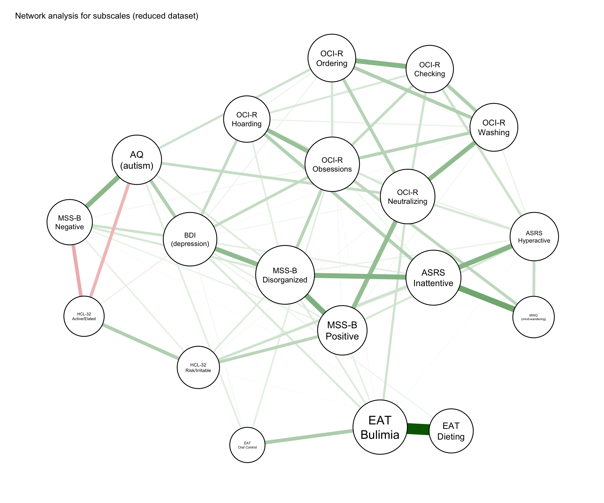
# 4. Calculate Centrality
centralityPlot(net_analysis_subscales_reduced, orderBy = "Strength")
# 5. Bootstrap Accuracy
boot_results_subscales_reduced <- bootnet(net_analysis_subscales_reduced, nBoots = 1000)
boot_plot <- plot(boot_results_subscales_reduced, labels = TRUE, interactive = TRUE)
plotly::ggplotly(boot_plot, height = 2000)4 Condensed report
4.1 Variable distribution plots
full_df_questionnaire_distribution_plot
reduced_df_questionnaire_distribution_plot
4.2 Bivariate correlation matrices
corr_matrix_full_data_ggplot
corr_matrix_reduced_data_ggplot4.3 Regression analyses
Estimate plots without p-value adjustment/correction:
regression_full_data_estimate_plot
regression_reduced_data_estimate_plot
No correction:
tab_model(regression_model_full_data,
regression_model_reduced_data,
show.stat = TRUE,
show.df = TRUE,
string.est = "β",
string.stat = "t",
dv.labels = c("MWQ (mind-wandering) in full dataset",
"MWQ (mind-wandering) in reduced dataset"),
digits = 3,
show.fstat = TRUE,
pred.labels = name_dict,
CSS = list(css.table = 'font-size: 10pt; width: 100%;'))| MWQ (mind-wandering) in full dataset | MWQ (mind-wandering) in reduced dataset | |||||||||
| Predictors | β | CI | t | p | df | β | CI | t | p | df |
| (Intercept) | 0.000 | -0.079 – 0.079 | 0.000 | 1.000 | 442.000 | -0.000 | -0.085 – 0.085 | -0.000 | 1.000 | 369.000 |
| ASRS (ADHD) | 0.470 | 0.372 – 0.567 | 9.472 | <0.001 | 442.000 | 0.509 | 0.401 – 0.618 | 9.239 | <0.001 | 369.000 |
| MSS-B (schizotypy) | -0.112 | -0.222 – -0.001 | -1.992 | 0.047 | 442.000 | -0.005 | -0.128 – 0.117 | -0.087 | 0.930 | 369.000 |
| AQ (autism spectrum) | 0.013 | -0.082 – 0.109 | 0.278 | 0.781 | 442.000 | 0.002 | -0.101 – 0.105 | 0.032 | 0.974 | 369.000 |
| OCI-R (OCD) | 0.039 | -0.061 – 0.139 | 0.773 | 0.440 | 442.000 | 0.030 | -0.080 – 0.140 | 0.542 | 0.588 | 369.000 |
| BDI short (depression) | 0.116 | 0.007 – 0.224 | 2.099 | 0.036 | 442.000 | 0.051 | -0.067 – 0.170 | 0.855 | 0.393 | 369.000 |
| HCL-32 (hypomania) | 0.101 | 0.016 – 0.185 | 2.345 | 0.019 | 442.000 | 0.057 | -0.033 – 0.147 | 1.237 | 0.217 | 369.000 |
| EAT (eating disorder) | -0.020 | -0.107 – 0.066 | -0.463 | 0.644 | 442.000 | -0.048 | -0.143 – 0.047 | -0.994 | 0.321 | 369.000 |
| Observations | 450 | 377 | ||||||||
| R2 / R2 adjusted | 0.277 / 0.266 | 0.301 / 0.288 | ||||||||
FDR correction:
tab_model(regression_model_full_data,
regression_model_reduced_data,
show.stat = TRUE,
show.df = TRUE,
string.est = "β",
string.stat = "t",
dv.labels = c("MWQ (mind-wandering) in full dataset",
"MWQ (mind-wandering) in reduced dataset"),
digits = 3,
show.fstat = TRUE,
p.adjust = "fdr",
pred.labels = name_dict,
CSS = list(css.table = 'font-size: 10pt; width: 100%;'))| MWQ (mind-wandering) in full dataset | MWQ (mind-wandering) in reduced dataset | |||||||||
| Predictors | β | CI | t | p | df | β | CI | t | p | df |
| (Intercept) | 0.000 | -0.079 – 0.079 | 0.000 | 1.000 | 442.000 | -0.000 | -0.085 – 0.085 | -0.000 | 1.000 | 369.000 |
| ASRS (ADHD) | 0.470 | 0.372 – 0.567 | 9.472 | <0.001 | 442.000 | 0.509 | 0.401 – 0.618 | 9.239 | <0.001 | 369.000 |
| MSS-B (schizotypy) | -0.112 | -0.222 – -0.001 | -1.992 | 0.094 | 442.000 | -0.005 | -0.128 – 0.117 | -0.087 | 1.000 | 369.000 |
| AQ (autism spectrum) | 0.013 | -0.082 – 0.109 | 0.278 | 0.893 | 442.000 | 0.002 | -0.101 – 0.105 | 0.032 | 1.000 | 369.000 |
| OCI-R (OCD) | 0.039 | -0.061 – 0.139 | 0.773 | 0.704 | 442.000 | 0.030 | -0.080 – 0.140 | 0.542 | 0.942 | 369.000 |
| BDI short (depression) | 0.116 | 0.007 – 0.224 | 2.099 | 0.094 | 442.000 | 0.051 | -0.067 – 0.170 | 0.855 | 0.786 | 369.000 |
| HCL-32 (hypomania) | 0.101 | 0.016 – 0.185 | 2.345 | 0.078 | 442.000 | 0.057 | -0.033 – 0.147 | 1.237 | 0.786 | 369.000 |
| EAT (eating disorder) | -0.020 | -0.107 – 0.066 | -0.463 | 0.858 | 442.000 | -0.048 | -0.143 – 0.047 | -0.994 | 0.786 | 369.000 |
| Observations | 450 | 377 | ||||||||
| R2 / R2 adjusted | 0.277 / 0.266 | 0.301 / 0.288 | ||||||||
4.3.1 ASRS subscales regression models
In both datasets ASRS regression suggests that both subscales are significant predictors, specifically “Inattentiveness” subscale.
tab_model(asrs_subscale_regression_model_full_data,
asrs_subscale_regression_model_reduced_data,
show.stat = TRUE,
show.df = TRUE,
string.est = "β",
string.stat = "t",
dv.labels = c("MWQ by ASRS subscales in full dataset",
"MWQ by ASRS subscales in reduced dataset"),
digits = 3,
show.fstat = TRUE,
pred.labels = name_dict,
CSS = list(css.table = 'font-size: 10pt; width: 100%;'))| MWQ by ASRS subscales in full dataset | MWQ by ASRS subscales in reduced dataset | |||||||||
| Predictors | β | CI | t | p | df | β | CI | t | p | df |
| (Intercept) | 0.000 | -0.079 – 0.079 | 0.000 | 1.000 | 447.000 | 0.000 | -0.084 – 0.084 | 0.000 | 1.000 | 374.000 |
| ASRS - hyperactive, impulsive |
0.147 | 0.052 – 0.241 | 3.040 | 0.003 | 447.000 | 0.159 | 0.059 – 0.260 | 3.114 | 0.002 | 374.000 |
| ASRS - inattentive | 0.428 | 0.333 – 0.522 | 8.867 | <0.001 | 447.000 | 0.456 | 0.356 – 0.557 | 8.916 | <0.001 | 374.000 |
| Observations | 450 | 377 | ||||||||
| R2 / R2 adjusted | 0.273 / 0.270 | 0.313 / 0.310 | ||||||||
4.3.1.1 Comparing performances of full models and models with ASRS subscales only
Full dataset:
ANOVA:
anova(regression_model_full_data, asrs_subscale_regression_model_full_data)Analysis of Variance Table
Model 1: mwq_total_score ~ ASRS_total_score + MSSB_total + AQ_total_score +
OCI_R_total_score + BDI_shorten_total_score + HCL32_total_score +
EAT_total_score
Model 2: mwq_total_score ~ ASRS_hyper_impulse + ASRS_inattentive
Res.Df RSS Df Sum of Sq F Pr(>F)
1 442 324.47
2 447 326.41 -5 -1.9426 0.5292 0.7542Other metrics:
compare_performance(regression_model_full_data, asrs_subscale_regression_model_full_data)# Comparison of Model Performance Indices
Name | Model | AIC (weights)
-----------------------------------------------------------------
regression_model_full_data | lm | 1147.9 (0.025)
asrs_subscale_regression_model_full_data | lm | 1140.6 (0.975)
Name | AICc (weights) | BIC (weights)
--------------------------------------------------------------------------
regression_model_full_data | 1148.3 (0.022) | 1184.8 (<.001)
asrs_subscale_regression_model_full_data | 1140.6 (0.978) | 1157.0 (>.999)
Name | R2 | R2 (adj.) | RMSE | Sigma
----------------------------------------------------------------------------
regression_model_full_data | 0.277 | 0.266 | 0.849 | 0.857
asrs_subscale_regression_model_full_data | 0.273 | 0.270 | 0.852 | 0.855Reduced dataset:
ANOVA:
anova(regression_model_reduced_data, asrs_subscale_regression_model_reduced_data)Analysis of Variance Table
Model 1: mwq_total_score ~ ASRS_total_score + MSSB_total + AQ_total_score +
OCI_R_total_score + BDI_shorten_total_score + HCL32_total_score +
EAT_total_score
Model 2: mwq_total_score ~ ASRS_hyper_impulse + ASRS_inattentive
Res.Df RSS Df Sum of Sq F Pr(>F)
1 369 262.80
2 374 258.17 -5 4.6313 Other metrics:
compare_performance(regression_model_reduced_data, asrs_subscale_regression_model_reduced_data)# Comparison of Model Performance Indices
Name | Model | AIC (weights)
-------------------------------------------------------------------
regression_model_reduced_data | lm | 951.8 (<.001)
asrs_subscale_regression_model_reduced_data | lm | 935.1 (>.999)
Name | AICc (weights) | BIC (weights)
----------------------------------------------------------------------------
regression_model_reduced_data | 952.3 (<.001) | 987.2 (<.001)
asrs_subscale_regression_model_reduced_data | 935.2 (>.999) | 950.9 (>.999)
Name | R2 | R2 (adj.) | RMSE | Sigma
-------------------------------------------------------------------------------
regression_model_reduced_data | 0.301 | 0.288 | 0.835 | 0.844
asrs_subscale_regression_model_reduced_data | 0.313 | 0.310 | 0.828 | 0.831In both datasets, comparison of the models suggest no “added value” of predictors beyond ASRS subscales. Metrics like AIC, BIC and adjusted R-squared express this specifically, as more complex models are penalized for higher number of predictors.
4.4 Network analysis
Only subscale network analyses are reported here. Total questionnaire scores networks and centrality analyses are reported above in the “Network analysis” section.
4.4.1 Full data
Note: node sizes indicate centrality
plot(net_analysis_subscales_full,
layout = "spring",
vsize = node_sizes_subscales_full,
label.cex = label_sizes_subscales_full, # Proportional to node size
posCol = "darkgreen",
negCol = "red3",
title = "Network analysis for subscales (full dataset)")
4.4.2 Reduced data
Note: node sizes indicate centrality
plot(net_analysis_subscales_reduced,
layout = "spring",
vsize = node_sizes_subscales_reduced,
label.cex = label_sizes_subscales_reduced, # Proportional to node size
posCol = "darkgreen",
negCol = "red3",
title = "Network analysis for subscales (reduced dataset)")
Mind wandering seems to be mostly associated with:
- ASRS inattentiveness
- ASRS hyperactivity
- OCI-R obsession
4.5 Final remarks
Based on the presented results, I have a few questions about “final thoughts” on this analyses and how we should proceed to the manuscript:
- Should we present analyses on full or reduced (no diagnosed/medicated participants)?
- Which results should be presented - all (bivariate correlations, regressions, network analysis)? Especially since we are aiming for a short report.
- In case of regressions with multiple predictors, should we go with no corrections or FDR?
- Should we do any other analysis? In the original/first version of the masnucript, Bayesian regression was performed as well.